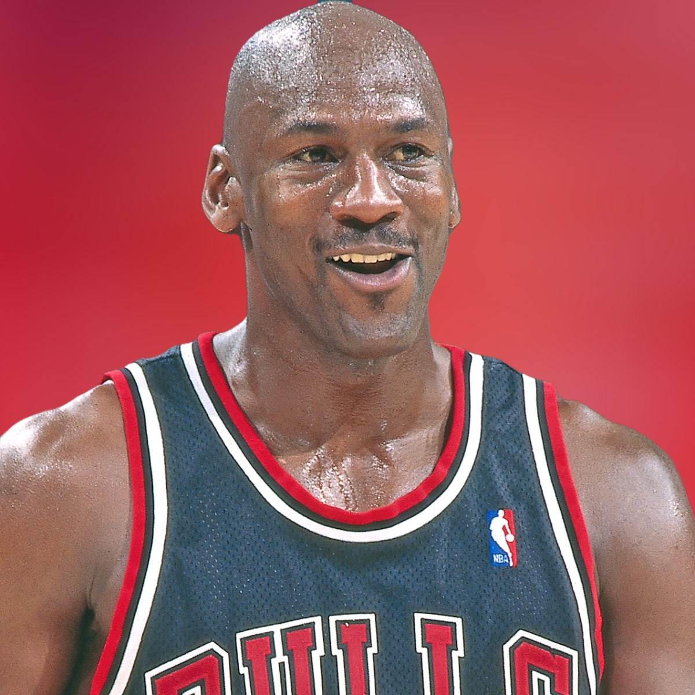
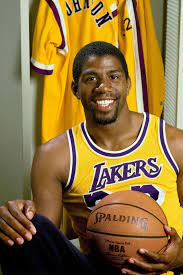
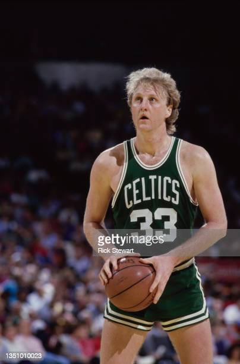
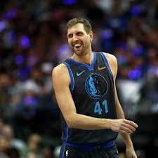

<meta charset="UTF-8">
	<meta name="viewport" content="width=device-width, initial-scale=1.0">
	<meta http-equiv="X-UA-Compatible" content="ie=edge">
	<link href="https://fonts.googleapis.com/css?family=Lato:300,400,700,900&display=swap" rel="stylesheet">
	<link rel="stylesheet" href="https://md-aqil.github.io/images/swiper.min.css">
	<link rel="stylesheet" href="styles.css">
	<title>Testimonials</title>
		
<section class="spacer">
			
				<div class="testimonial-section">
					<div class="testi-user-img">
					<div class="swiper-container gallery-thumbs">
						  <div class="swiper-wrapper">
								  <div class="swiper-slide">
										
									</div>
						  <div class="swiper-slide">
							  
						  </div>
						  <div class="swiper-slide">
						  
						  </div>
					  
						  <div class="swiper-slide">
						  
						  </div>
						  
						  </div>
					  </div>
					</div>
					<div class="user-saying">
						  <div class="swiper-container testimonial">
								  <!-- Additional required wrapper -->
								  <div class="swiper-wrapper ">
									  <!-- Slides -->
									  <div class="swiper-slide">
										  <div class="quote">
												  
											  <p>
													  “Saket is the best photographer i have everr worked with.He is talented and patient
													   and has clicked great pictures of when i shoot three pointer and when i do dunks.“
											  </p>
											  <div class="name">-Michael Jordan-</div>
											  <div class="designation">Chicago Bulls</div>
											  
										  </div>
									  </div>
									  <div class="swiper-slide">
										  <div class="quote">
												
											
											  <p>
													  “Saket is the best photographer ever according to me. His level of photography skills
													  are beyond what i had imagined.“
											  </p>
											  <div class="name">-Magic Johnson-</div>
											  <div class="designation">Los Angeles Lakers</div>
											  
										  </div>
									  </div>
									  <div class="swiper-slide">
										  <div class="quote">
												
												  
											  <p>
													  “Saket is really great working with. His level of patience is very much high and
													  he is not very much difficult to work with.“
											  </p>
											  <div class="name">-Larry Bird-</div>
											  <div class="designation">Boston Celthics</div>
											  
										  </div>
									  </div>
									  <div class="swiper-slide">
											  <div class="quote">
													
												 
												  <p>
														  “I was really greateful to work with Saket. Took great pictures of mine when i dunk and when
														  i made half court shots. I really recommend you to give him a shot to take pic of a shot!“
												  </p>
												  <div class="name">-Dirk Nowitzki-</div>
												  <div class="designation">Dallas Mavericks</div>
												  
											  </div>
										  </div>
									  
								  </div>
								  <!-- If we need pagination -->
								  <div class="swiper-pagination swiper-pagination-white"></div>
							  
							  </div>
					</div>
				</div>
			</section>
	<script src="https://md-aqil.github.io/images/swiper.min.js"></script>			
	<script src="index.js"></script>
